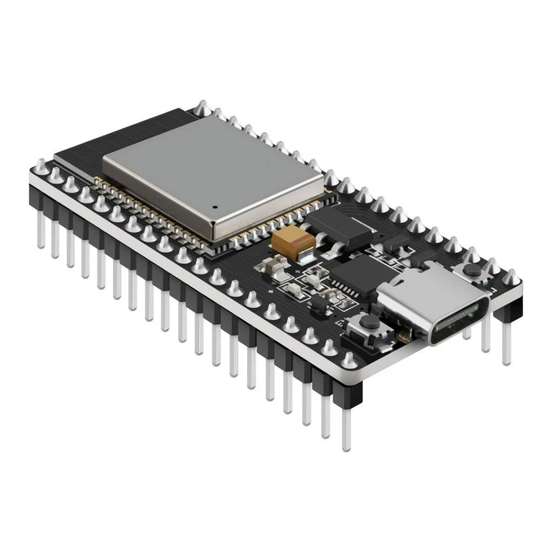
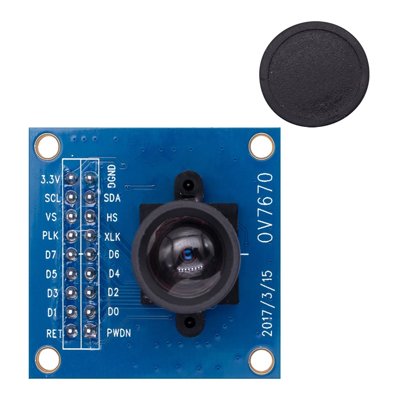
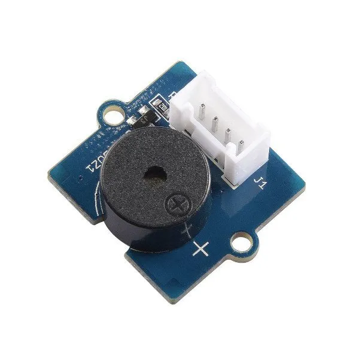
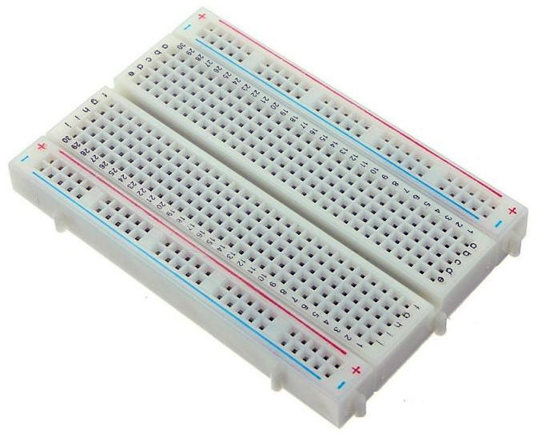
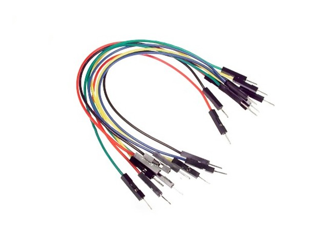
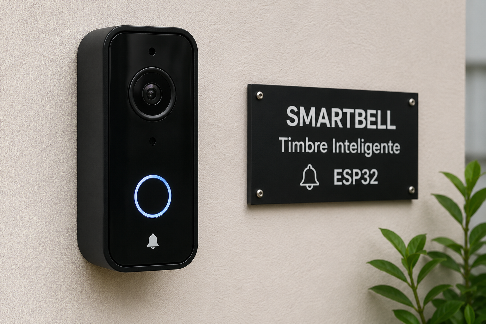

Cuando alguien toca el timbre, inicia un conteo de 5 segundos. Si no respondes, la cámara graba y un mensaje anuncia: "No me encuentro en casa".
Listo
Toca el botón →
Flujo del sistema
Un flujo simple, automatizado y siempre activo.
Pulsa el botón físico conectado al ESP32.
01Temporizador de 5 segundos para responder.
02Si no respondes, comienza la grabación.
03Reproduce: "No me encuentro en casa".
04Hardware
Todo lo que necesitas para replicar el proyecto.
Microcontrolador con Wi-Fi y Bluetooth. El cerebro del proyecto.
Entrada física que dispara el evento del timbre.
Base para montar el circuito sin soldar.
Conexiones entre ESP32, botón y protoboard.
Captura el video cuando no hay respuesta.
Reproduce el mensaje "No me encuentro en casa".
Galería
Componentes utilizados para la construcción del timbre inteligente SmartBell.






Tutorial
Sigue estos pasos para que todo funcione perfecto.
Conecta el ESP32 a la protoboard. Une el botón pulsador a un pin GPIO (ej. GPIO 4) y a GND con cables macho/macho.
Si usas ESP32-CAM, déjala lista. Conecta el buzzer o módulo de audio a otro GPIO (ej. GPIO 5).
Desde el Arduino IDE, instala el paquete ESP32 y sube el sketch que detecta el botón e inicia el temporizador.
Al pulsar, el ESP32 inicia un contador de 5s. Si nadie responde, ejecuta la acción: grabar y reproducir el mensaje.
La cámara graba; el altavoz dice "No me encuentro en casa". Opcional: enviar notificación por Wi-Fi.
Energiza el ESP32, pulsa el botón y verifica el flujo completo. Documenta el resultado.
Firmware
Sketch de referencia para Arduino IDE con ESP32.
// SmartBell · ESP32
#define BTN_PIN 4
#define BUZZER_PIN 5
#define LED_REC 2
const unsigned long WAIT_MS = 5000;
void setup() {
Serial.begin(115200);
pinMode(BTN_PIN, INPUT_PULLUP);
pinMode(BUZZER_PIN, OUTPUT);
pinMode(LED_REC, OUTPUT);
}
void loop() {
if (digitalRead(BTN_PIN) == LOW) {
Serial.println("Timbre presionado...");
unsigned long t0 = millis();
bool answered = false;
while (millis() - t0 < WAIT_MS) {
// aquí podrías escuchar un botón de "respuesta"
delay(50);
}
if (!answered) {
digitalWrite(LED_REC, HIGH); // inicia "grabación"
tone(BUZZER_PIN, 1000, 300); // aviso
delay(500);
reproducirMensaje(); // "No me encuentro en casa"
digitalWrite(LED_REC, LOW);
}
delay(1000);
}
}
void reproducirMensaje() {
// Activa módulo de audio / DFPlayer / ESP32-CAM
Serial.println("Mensaje: No me encuentro en casa");
}